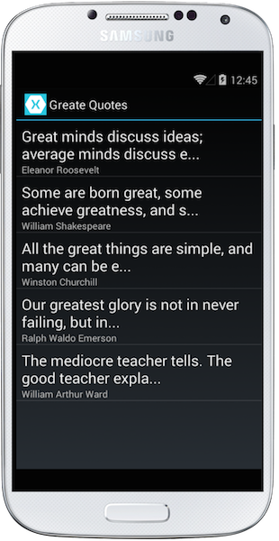

Exercise 1: Use the Factory Pattern to create a Dependency
Duration
30 minutes
Goals
This exercise will take an existing iOS or Android project and pull out sharable code into a Portable Class Library, using the Factory pattern to isolate the platform-specific code to read and write the storage file.
Assets
This exercise includes a starter project in the Part 01 Resources folder. Make sure you have this folder before starting the exercise.
Challenge
There are two applications in the starting solution, one for iOS and one for Android. They display famous quotes and allow you to add, edit and delete quotes from a persisted XML file.
 |
 |
The Android and iOS projects are completely independent right now, however they have a few files and some connector code which could be shared with a little rework. Our challenge is to take these files and move them to a shared Portable Class Library, reworking the code so the unsharable code is supplied by the iOS and Android code using the factory pattern.
The sharable code is the model representing our quote and the data layer which loads and saves the quotes - these are contained in the Data folder in both projects. The loader code persists to and from a file which is placed in different locations depending on the platform, so we will need to abstract this location.
We will have to perform several steps to accomplish our goals:
- Create a new Portable Class Library to hold our shared code.
- Move the
GreatQuotemodel into the PCL. - Create an abstraction to represent the
QuoteLoaderwhich will allow the platfom-specific code to provide an implementation that places the file in the proper location. - Supply the implementation through a factory property or method which creates the quote loader.
You can either come up with your own solution to the above steps, or follow along with the provided instructions below.
Steps
You can work with either the iOS or Android project initially, perform all the steps and get the project working, and then if you have time at the end, convert the other project to use your new abstractions and factory.
Create the Portable Class Library
Our first step is to create the library to hold our shared code - we will use a Portable Class Library (vs. a Shared Project) as it will force us to put more thought into how we architect our shared code and provide a distinct boundary between the projects.
- Add a new Portable Class Library (or Portable Library in Xamarin Studio) project to the solution. Name it GreateQuotes.Data.
- Remove the blank source file added to the project by default.
- Move the
GreatQuoteclass from the Data folder in your platform project into the PCL. - Add a reference to the PCL to your platform project so it has access to the model data.
- Build the solution and make sure it still works.
Create the abstraction for the Quote Loader
Next, we will need to provide an abstraction for the Quote Loader code we are using. If you try to add it to the PCL directly, it will fail to compile because it has dependencies against file I/O which is not available in our current profile.
- Create a new interface to represent our
QuoteLoader. We'll use an interface here, but you could also use a base class as well. The class should be placed into the Portable Class Library as it will be shared across all our projects. - Name it
IQuoteRepositoryand include theLoadandSavemethods just as they are in the real class in your platform project. - Have your platform-specific implementation of
QuoteLoaderimplement this interface - you shouldn't need to make any code changes to it as the signatures should already be present in the existing class. - Build the application and make sure it still runs.
Create the Factory to create the IQuoteRepository
Next, let's utilize the Factory pattern to create the implementation of the IQuoteRepository that we will use.
- Create a new class named
QuoteRepositoryFactoryin the Portable Class Library. This will represent the factory class we will use to create our platform-specific implementation of anIQuoteRepository. - Make the class
static. - Add a single static
Func<IQuoteRepository>property into the class namedCreate.
Share the Quote collection
In both the Android and iOS projects, there is code to load and save the quotes. This currently utilizes the QuoteLoader directly, however we'd like to push this common code into our shared area (the PCL).
- Open the App.cs or AppDelegate.cs files in your platform project and identify the static
List<GreateQuote>that is used to load and save quotes. This is the code we'd like to move, along with the method to save the quotes. - Create a new
QuoteManagerclass in the PCL. - Use the singleton pattern to create a static
Instanceproperty to expose a single copy of theQuoteManager. You can use the convenientLazy<T>to implement this pattern (shown in the code below), or use your own style, the point is to create a static property to get to a known instance of the object. - Add a public
List<GreatQuote>property namedQuotesto expose the loaded quotes. - In the constructor, obtain an
IQuoteRepositoryusing the factory and populate your list of quotes using theLoadmethod. - Add a new public, instance method named
Savewhich saves the list of quotes using the quote repository.
Use the Quote Manager and Assign the Factory
The final step is to use the new shared QuoteManager class and assign the factory.
- Open the application level class which was loading the quotes - this is
AppDelegatefor iOS andAppfor Android. - In the initialization, set the
QuoteRepositoryFactory.Createmethod to create a new platform-specificQuoteLoaderclass. - Next, remove the
Quotescollection from the platform-specific code and the currentQuoteLoadercode. Compile and fix all the resulting errors to now use theQuoteManager.Instance.Quotesproperty andQuoteManager.Instance.Savemethod instead. - You can examine the completed projects if you need any help with this step.
Update the other platform project
If you have time, update the other platform-specific project to use your new Portable Class Library and QuoteManager.
Summary
In this exercise, you have taken an existing iOS and/or Android project and moved the data management code into a Portable Class Library, utilizing the Factory Pattern to load and save the data to a file.
There is a completed version of the lab exercise in the resources folder.